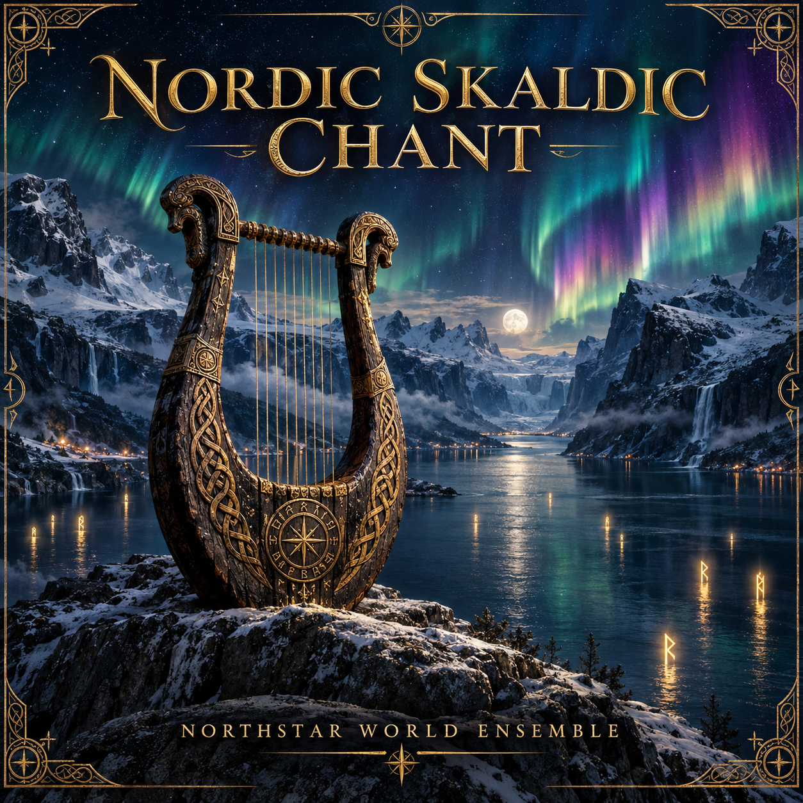

IDR · ORIGINAL COVER ART
Nordic Skaldic Chant
NorthStar World Ensemble
A lyre carved in gold and dark wood. A silent fjord beneath ribbons of jewel-colored aurora. An original visual companion to the recording.
Download cover artwork ↗Native PNG · 1254 × 1254 pixels
Original AI-assisted artwork · Cover edition 02
This page presents cover artwork. The recording is awaiting editorial listening review; no music video is released here.